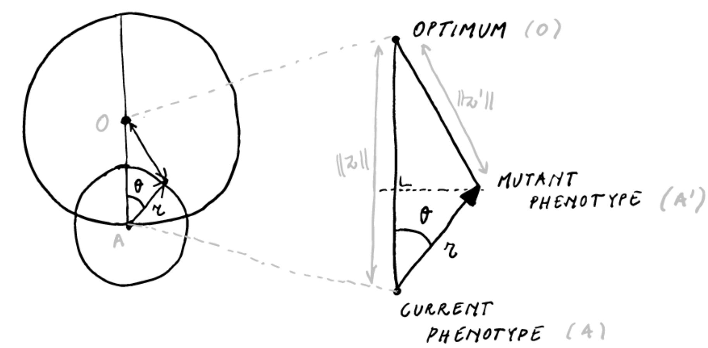
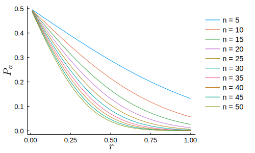

Fisher’s geometric model and the cost of complexity
The following is based on a polishing of some notes I made for a presentation on H. A. Orr’s paper “Adaptation and the cost of complexity” [@orr2000] for our reading group on ‘concepts and models in evolution’ at Ghent University (January 2021).
I will start by discussing some of the basics of Fisher’s Geometric model (FGM). Then I will switch to Orr’s paper. What Orr is after is a model of adaptation at the phenotypic level that is grounded in population genetics, with phenotypic complexity as a parameter. To this end, he builds on the work of @kimura1983, which makes the connection between FGM and the population genetics of selection.
Fisher’s geometric model (FGM)
In the section “The nature of adaptation” (p. 38) of @fisher1930, Fisher asks what we mean when we recognize an organism as adapted.
“In order to consider in outline the consequences to the organic world of the progressive increase of fitness of each species of organism, it is necessary to consider the abstract nature of the relationship which we term ‘adaptation’. This is the more necessary since any simple example of adaptation, such as the lengthened neck and legs of the giraffe as an adaptation to browsing on high levels of foliage, or the conformity in average tint of an animal to its natural background, lose, by the very simplicity of statement, a great part of the meaning which the word really conveys. For the more complex the adaptation, the more numerous the different features of conformity, the more essentially adaptive the situation is recognized to be.”
Clearly, when we think of adaptation, we are tempted to consider those obvious examples like the giraffe (or is it?), but as Fisher wants to stress in this opening paragraph, this is misguiding us. Most of the extraordinary adaptation in nature can not be recognized as a simple one-to-one correspondence between an environmental challenge and a phenotype, but is rather reflected by the subtle fine-tuning of complex organisms to complex environments. The ability to maintain homeostasis in a given array of conditions seems to be the ultimate example of such a phenotype. Already in this opening paragraph, the correspondence between complexity and dimensionality is explicitly posited.
“The statistical requirements of the situation, in which one thing is to conform to another in a large number of different respects, may be illustrated geometrically. The degree of conformity may be represented by the closeness with which a point \(A\) approaches a fixed point \(O\). In a space of three dimensions we can only represent conformity in three different respects, but even with only these the general character of the situation may be represented. The possible positions representing adaptations superior to that represented by \(A\) will be enclosed by a sphere passing through \(A\) and centred at \(O\). If \(A\) is shifted through a fixed distance, \(r\), in any direction its translation will improve the adaptation if it is carried to a point within this sphere, but will impair it if this position is outside. If \(r\) is very small, it may be perceived that the chances of these two events are approximately equal, and the chance of an improvement tends to the limit \(1/2\) as \(r\) tends to zero; but if \(r\) is as great as the diameter of the sphere or greater, there is no longer any chance whatever of improvement, for all points within the sphere are less than this distance from \(A\). For any value of \(r\) between these limits the actual probability of improvement is \(\frac{1}{2}(1-r/d)\) where \(d\) is the diameter of the sphere. The chance of improvement thus decreases steadily from limiting value \(1/2\) when \(r\) is zero, to zero when \(r\) equals \(d\). Since \(A\) in our representation may signify either the organism or its environment, we should conclude that a change on either side has, when this change is extremely minute, an almost equal chance of effecting improvement or the reverse; while for greater changes the chance of improvement diminishes progressively, becoming zero, or at least negligible, for changes of a sufficiently pronounced character.” (emphasis mine)
Here Fisher defines his famous geometric model in 3D. Let us however define Fisher’s model in general first, then we’ll consider the 2D variant, to finally generalize to the high-dimensional case.
FGM is a model of phenotypic evolution. A biological entity (this can be an individual or a population), is modeled as a point \(A\), in an \(n\)-dimensional vector space \(\mathbb{R}^n\) – the phenotypic space. The phenotypic space is characterized by a single optimal phenotype, which we identify (without loss of generality) with the origin of the space \(O\). That is, we choose the basis of the vector space such that the optimum is the zero vector \(\mathbf{0}\), and such that any phenotypic state \(A\) in this space can be identified with the vector \(z\) pointing from the optimum to the relevant point. If we take this vector space to be a normed Euclidean space, the distance from the optimum for any given point \(z\) is then the Euclidean norm \(\Vert z \Vert\). Clearly, this model amounts to treating an organism as a list of \(n\) orthogonal characters.
Those are the statics of the model, for any given two phenotypic states \(z_1\) and \(z_2\), we can say which one exhibits a higher degree of adaptation (i.e. the one closest to the optimum, as measured by the Euclidean norm). Evolution in the model happens by mutation, where a mutation takes the current phenotype represented by point \(A\) to a point \(A'\) by moving a distance \(r\) in a random direction from the point \(A\). In other words, the phenotype after a random mutation is distributed uniformly on the \(n\)-ball (hypersphere) around \(A\) with radius \(r\). The mutation can be represented as a vector \(\rho\) with \(\Vert \rho \Vert = r\), so that the phenotype after mutation \(z' = z + \rho\). An important assumption embodied by this mutation mechanism is what is referred to as universal pleiotropy, i.e. every mutation affects all traits (the set of vectors of zero magnitude in any direction has measure 0, i.e. a random vector with norm \(r\) in \(\mathbb{R}^n\) is non-zero in every direction with probability 1).
FGM in two dimensions
Let’s see what we can get from considering this model in \(\mathbb{R}^2\) by pondering the following diagram

For a given mutation effect size \(r < \Vert z \Vert\) and current distance to the optimum \(\Vert z \Vert\), the distance moved towards the optimum \(\Delta z\) can be expressed as a function of \(\theta\)
\[\Delta z(\theta) = \Vert z \Vert - \sqrt{\Vert z \Vert^2 -2\Vert z \Vert r \cos \theta + \frac{r^2}{2}} \approx r \cos \theta - \frac{r^2}{2 \Vert z \Vert}\]
(Note I am not so sure what justifies the approximation of the former by the latter. A Taylor series expansion in \(r = 0\) seems to go some way, but not all the way as far as I can tell). In \(\mathbb{R}^2\), the assumption that the mutation has a random direction in the plane amounts to \(\theta \sim \mathrm{Uniform}(0,2\pi)\), so that we can find using the approximate form for \(\Delta z\), we find that the probability of a mutation being adaptive is
\[P_a = \Pr\{\Delta z > 0\} \approx \Pr\{\theta > \cos^{-1} r/2z\} = 1 - \frac{\cos^{-1} r/d}{2\pi}\]
FGM in three and higher dimensions
In higher dimensions, \(\Delta z(\theta)\) remains unaltered, i.e. we still have the triangle \(AA'O\), and we can still express the distance moved towards the optimum as the same function of \(\theta\). However, \(\theta\) will no longer be uniformly distributed on \((0, 2\pi)\). For the 3D case, we can work it out using the volume of the spherical lens divided by the volume of a sphere with radius \(r\), for which I get \(P_a = \frac{1}{2}\big(1 - \frac{3r}{4d}\big)\) for the probability of improvement (which is not exactly Fisher’s probability). Importantly, \(P_a\) in \(\mathbb{R}^3\) is different from \(P_a\) in \(\mathbb{R}^2\).
However the question remains whether we can find an (approximate) expression for \(P_a\) in any dimension. Here is Fisher:
“The representation in three dimensions is evidently inadequate for even single organ, in cases in which we know enough to appreciate the relation between structure and function, as is, broadly speaking, the case with the eye in vertebrates, often shows this conformity in many more than three respects. It is of interest therefore, that if in our geometrical problem the number of dimensions be increased, the form of the relationship between the magnitude of the change \(r\) and the probability of improvement, tends to a limit […]”
As @leigh1987 supposedly showed (I’m not sure, I cannot retrieve this paper), the limit postulated (but not explicitly derived) by Fisher can be obtained by considering the change of variables
\[y = \sqrt{n} \cos \theta\]
and noting that for \(n \gg\), we get that \(y\) approximately follows a standard Normal distribution. The derivation involves some nasty integrals (see e.g. @welch2003 appendix 1), but there are reasons why it is unsurprising to find the Normal distribution here (the multivariate Normal distribution exhibits spherical symmetry, i.e. the probability density is invariant to rotations, as we assume for mutations in FGM). Here are some simulation results, where I simulated random points on the Euclidean \(n\)-ball and computed \(y\):

Where in black the simulated values for \(y\) are shown and in blue the standard normal density. Starting from \(n \ge 10\) the Normal approximation becomes very good.
If we execute the change of variables, we get
\[\Delta z(y) \approx \frac{r}{\sqrt n} \Big(y - \frac{r\sqrt n}{2 \Vert z \Vert}\Big)\]
Which shows that given the current distance to the optimum \(\Vert z \Vert\), for a mutation of given size \(r\) to be adaptive \(y\) must exceed \(x := \frac{r\sqrt{n}}{2 \Vert z \Vert}\), so that
\[P_a = 1 - \Phi(x)\]
Where \(\Phi(x)\) is the cumulative distribution function of the standard Normal density. of course \(1-\Phi(x)\) is monotonically decreasing in \(x\), so we find Fisher’s result that the probability that a mutation leads to improvement is highest for infinitesimally small mutations, and declines progressively for larger \(r\). Note that \(x > 0\), so that the maximal \(P_a = 1/2\). Interestingly, since \(x \propto \sqrt{n}\), we also find that this decline in the probability of a mutation leading to adaptation decreases quite markedly with increasing dimensionality \(n\), the parameter that corresponds to, on Fisher’s interpretation, organismal complexity (and which, in a less bold interpretation, corresponds to the number of orthogonal characters relevant for adaptation). This is the first manifestation of the cost of complexity, for mutations of a given size \(r\) and given some degree of maladaptation \(\Vert z \Vert\), the probability of a mutation being adaptive decreases with increasing complexity \(n\).

This probability is the central result of FGM. This is actually [a reflection of a very general geometrical phenomenon, namely that in high-dimensional spaces it is very hard to locate some point or region. If you are situated at some distance \(d\) from a point \(O\) in some \(n\)-dimensional space, and you move in a random direction by some distance \(r < d\), the likelihood that you’ll get closer to the point \(O\) decreases exponentially as the dimensionality increases. As a mathematician once put it: high-dimensional space is a lonely place.
Orr’s model of adaptation
FGM as sketched above is not a complete model of evolution. In fact, it doesn’t tell us much about how a population evolves, except that mutations of larger effect are less likely to be advantageous in more ‘complex’ organisms.
To build a model of evolution under FGM, we need
- a mutation process
- a relationship between phenotype and fitness (a fitness function)
So far we have only considered properties of FGM given some random FGM mutation, but we have said nothing about how often mutations of a given effect will occur during evolution. Moreover, and this is of crucial importance, if we consider \(z\), the point in space moving towards the optimum, as a population (as Orr does), we must take into account the probability that a mutation fixes in the population, and leads to a persistent change in the mean phenotype \(z\). This fixation probability will depend on the change in fitness caused by the mutation.
We will consider Gaussian stabilizing selection, so that the fitness of an individual with phenotype \(z\) is given by
\[ w(z) = \exp (-\Vert z \Vert^2) \]
and we consider mutations of fixed size \(r\) happening at a rate \(\mu\) per individual, so that the total mutation rate for a population of size \(N\) is \(N\mu\).
Now for some simplifying assumptions, Orr considers a monomorphic population residing at a distance \(\Vert z \Vert\) from the optimum, where every mutation is either fixed or lost before the next one occurs (i.e. \(N\mu\) is fairly small). Orr further assumes that deleterious mutations are never fixed by random drift.
Under this model, the expected distance moved to the optimum in a small time interval will be
\[\mathbb{E}[\Delta z(\delta t)] = \mathbb{E}[\Delta z|\text{fix}] \times \underbrace{P[\text{fix}|\text{adv}]}_{\Pi} \times \underbrace{P[\text{adv}|\text{mut in } \delta t]}_{P_a} \times \underbrace{P[\text{mut in } \delta t]}_{(N\mu)\delta t}\]
So that the rate of phenotypic change
\[\begin{aligned} \frac{d \Vert z(t) \Vert}{d t} &= \lim_{\delta t \rightarrow 0}\frac{\Vert z(t + \delta t) \Vert- \Vert z(t) \Vert}{\delta t} \\ &\color{lightgray}{= \lim_{\delta t \rightarrow 0} \frac{(\Vert z(t) \Vert- \mathbb{E}[\Delta z(\delta t)]) - \Vert z(t) \Vert}{\delta t}} \\ &\color{lightgray}{= \lim_{\delta t \rightarrow 0} \frac{- \mathbb{E}[\Delta z(\delta t)]}{\delta t}} \\ &= -(N \mu) \times \Pi \times P_a \times \mathbb{E}[\Delta z|\text{fix}] \end{aligned}\]
(note that this is in fact the rate of change of the expected distance to the optimum \(d\mathbb{E}\Vert z(t) \Vert/dt\) , but I will follow Orr in blurring this distinction).
If we measure time in the number of mutations produced, we get
\[ \frac{d \Vert z \Vert}{dt} = - \Pi \times P_a \times \mathbb{E}[\Delta z | \text{fix}] \]
We know \(P_a\) from the properties of FGM discussed above. To make progress we need to find \(\Pi\) and \(\mathbb{E}[\Delta z | \text{fix}]\) as functions of the parameters in the model (which consists of nothing more than \(z\), \(r\), \(y = \sqrt{n} \cos \theta\) and \(n\)).
The probability of fixing an advantageous mutation
\(\Pi\) is given by fairly standard results from population genetics theory. The probability of fixing an adaptive mutation is given by Haldane’s approximation (also by diffusion theory) as \(2s\) when \(s\) is not too large, where \(s\) is the selection coefficient in favor of the mutation. The selection coefficient for a mutation moving \(\Delta z\) towards the optimum is defined as
\[ \frac{1+s}{1} = \frac{w(z - \Delta z)}{w(z)} \]
Now Orr considers Gaussian stabilizing selection, so that for a mutation that moves us a distance \(\Delta z\) towards the optimum, we get a selection coefficient
\[s = \frac{\exp(-\frac{1}{2}(\Vert z \Vert- \Delta z)^2/2)}{\exp(-\frac{1}{2}\Vert z \Vert^2)} - 1 = \exp\Big(\Vert z \Vert\Delta z - \frac{\Delta z^2}{2}\Big) - 1\]
(note that there is a typo in Orr). For \(\Delta z\) smallish we have
\[s \approx \exp(\Vert z \Vert\Delta z) - 1 \approx \Vert z \Vert\Delta z\]
The expected selection coefficient for advantageous mutations is then
\[\mathbb{E}[s|\text{adv}] \approx \Vert z \Vert\mathbb{E}[\Delta z | \text{adv}]\]
so that the fixation probability conditional on a mutation being advantageous becomes becomes
\[\Pi \approx 2 \Vert z \Vert\mathbb{E}[\Delta z| \text{adv}]\]
Now we’ve obtained
\[ \frac{d \Vert z \Vert}{dt} = - 2 \Vert z \Vert\times P_a \times \mathbb{E}[\Delta z| \text{adv}] \times \mathbb{E}[\Delta z | \text{fix}] \]
The expected phenotypic change under FGM
Now the somewhat more tedious part is to find \(\mathbb{E}[\Delta z| \text{adv}]\) and \(\mathbb{E}[\Delta z| \text{fix}]\). These can be found from the properties of FGM. \(\mathbb{E}[\Delta z| \text{adv}]\) can be straightforwardly obtained by integrating \(\Delta z\) over advantageous mutations. For clarity of the probabilistic aspects, I’ll write a mutation being advantageous as a binary random variable \(A = \mathbb{1}_\text{adv}\), and probability density functions are denoted by \(p(\cdot)\)
\[\begin{aligned} \mathbb{E}[\Delta z|A=1] &= \int_{\Delta z} \Delta zp(\Delta z|A=1) d\Delta z\\ &= \frac{1}{P_a}\int_{\Delta z} \Delta zp(\Delta z, A=1) d\Delta z \end{aligned}\]
Note that
\[p(\Delta z, A=1) = \begin{cases} 0 & \Delta z< 0 \\ p(\Delta z) & \Delta z\ge 0\end{cases}\]
so that
\[\begin{aligned} \mathbb{E}[\Delta z|A=1] &= \frac{1}{P_a}\int_0^\infty \Delta zp(\Delta z) d\Delta z\\ &= \frac{r}{\sqrt{n}} \frac{\int_{x}^\infty (y - x) \exp(-y^2/2) dy} {\int_x^\infty \exp(-y^2/2)dy} \end{aligned}\]
(note that the denominator is \(\sqrt{2\pi} P_a\)). Slightly more cumbersome is the derivation of \(\mathbb{E}[\Delta z|F=1]\) (where of course \(F = \mathbb{1}_\text{fix}\))
\[\begin{aligned} \mathbb{E}[\Delta z|F = 1] = \mathbb{E}[\Delta z|F=1, A=1] &= \int_{\Delta z} \Delta z\frac{p(\Delta z, F=1|A=1)}{p(F=1|A=1)} d \Delta z\\ &= \int_{\Delta z} \Delta z\frac{p(F=1|\Delta z, A=1)p(\Delta z|A=1)} {\int_{\Delta z}p(\Delta z,F=1|A=1)p(\Delta z|A=1)} d \Delta z\\ &= \int_{\Delta z} \Bigg[ \frac{\Delta z\Pi(\Delta z) p(\Delta z|A=1)} {\int_{\Delta z}\Pi(\Delta z) p(\Delta z|A=1) d\Delta z} \Bigg] d\Delta z \end{aligned}\]
Where (recall) \(\Pi(\Delta z) \approx 2 \Vert z \Vert\Delta z\) for small \(\Delta z\). The integral in the denominator is a normalizing constant, so that we get
\[\begin{aligned} \mathbb{E}[\Delta z|F = 1] &= \frac{\int_{\Delta z} \Delta z^2 p(\Delta z|A=1)d\Delta z} {\int_{\Delta z}\Delta zp(\Delta z|A=1)d\Delta z} \\ &= \frac{r}{\sqrt{n}} \frac{\int_{x}^\infty (y-x)^2 \exp(y^2/2) dy} {\int_x^\infty (y-x) \exp(y^2/2)dy} \end{aligned}\]
and finally we get
\[\mathbb{E}[\Delta z|\text{adv}] E[\Delta z|\text{fix}] = \frac{r^2}{n} \frac{\int_x^\infty (y - x)^2 \exp(-y^2/2) dy} {\int_x^\infty \exp(-y^2/2)dy}\]
Let the mathematicians laugh at my lengthy and probably silly derivations, but there are no more secrets here to me!
The rate of phenotypic change and the rate of adaptation
We are now ready to express the rate of phenotypic change during adaptation in terms of the parameters of FGM. Multiplying by \(-2\Vert z \Vert P_a\), we arrive at
\[\frac{d \Vert z(t) \Vert}{dt} \approx - \frac{2 \Vert z(t) \Vert r^2}{n\sqrt{2\pi}} \int_x^\infty (y - x)^2 \exp(-y^2/2) dy\]
where \(x = \frac{r\sqrt{n}}{2\Vert z(t) \Vert}\). We can write this more clearly as
\[\frac{d \Vert z(t) \Vert}{dt} \approx - \frac{2r^2}{n} M(x) \Vert z(t) \Vert\]
where \(M(x)\) decreases monotonically in \(x\). The rate of adaptation can then be found by an application of the chain rule \(\frac{d w(z)}{dt} = \frac{d w(z)}{d \Vert z(t) \Vert} \frac{d \Vert z(t) \Vert}{dt}\), i.e.
\[\frac{d w(t)}{dt} = \frac{2r^2}{n} M(x) w(t) \Vert z(t) \Vert^2\]
which can be written in terms of fitness exclusively by substituting \(\Vert z(t) \Vert^2 = -2 \log{w(t)}\) (also in \(x\))
\[\frac{d w(t)}{dt} \approx - \frac{4r^2}{n} M(x) w(t) \log w(t) \]
Note that \(\log{w(t)} \le 0\), so that the rate of change in fitness is strictly positive, i.e. under this model fitness can only increase. Also note how that \(w(t) \log{w(t)}\) term looks suspiciously like an entropy term (but note that \(w(t)\) is not a probability). The following plot illustrates these results for various \(n\) and mutation effect sizes \(r\):

The optimal mutation and the cost of complexity
Three important observations must be made:
- The optimal mutation effect size \(r\) (i.e. the \(r\) leading to most rapid adaptation) is intermediate.
- The optimal \(r\) decreases for increasing \(n\).
- The maximal and average (over \(r\)) rate of adaptation decreases with increasing \(n\).
The first point is a qualitative feature independent of the dimensionality \(n\) of the space. It is a straightforward consequence of combining FGM with the population genetics of selection, which Orr attributes to Kimura. While mutations of large effect have smaller probabilities of being advantageous (FGM), they are more likely to fix in the population when advantageous (popgen). Or, stated the other way around, mutations of small effect may be more likely to be adaptive, they are more likely to get lost due to genetic drift at the same time. The combination of FGM with the population genetics of selection in finite populations leads to a model which provides a quite elegant refutation of the micromutationist stance that is sometimes associated with a particular hardcore brand of neo-Darwinism.
The ‘cost of complexity’ as proclaimed in the title of Orr’s paper however emerges when we consider the effect of \(n\), the dimensionality of the phenotypic space. First recall that in the model, \(n\) is properly interpreted as the number of orthogonal traits under stabilizing selection for a given constant optimum, and that the assumption of universal pleiotropy entails that any mutation affects all \(n\) idealized traits almost surely. As we increase the number of phenotypic dimensions relevant for adaptation, we see that the rate of adaptation for a given \(r\) and current distance \(\Vert z \Vert\) from the optimum decreases markedly. This phenomenon is referred to as the cost of complexity. More complex organisms (on this interpretation) adapt more slowly.
The cost of complexity has three sources
- The probability of a mutation being advantageous for a given effect size \(r\) decreases with \(n\) (Fisher)
- The expected phenotypic change of a favorable mutation decreases with \(n\) (a consequence of (1))
- The expected phenotypic change for a fixed mutation decreases with \(n\)
while the latter two aspects are consequences of the first, they enter the final expression for the rate of fitness increase during adaptation independently. As Orr notes, Fisher’s basic observations hold, but the cost of complexity is considerably higher than Fisher’s analysis suggests if we take into account the population genetics of selection in finite populations.
Some remarks about FGM
“The purpose of models is not to fit the data but to sharpen the question.” – Samuel Karlin
Orr’s effective number of dimensions
A curious result that follows from Orr’s model, is that while the optimal \(r\) decreases for increasing \(\sqrt n\), on the standardized scale determined by \(x = r\sqrt{n}/2z\), the optimal mutation size \(x_\mathrm{opt}\) is a constant approximately equal to 0.95.
This entails that if we could locate the mutation effect size that maximizes the change in fitness in some situation, we could use the FGM predictions to estimate the \(n\) under the assumptions of FGM. We could than consider this \(n_e\) a kind of ‘effective number’ of phenotypic dimensions under selection, much like effective population size is defined with respect to some idealized population. Clearly this is more of a thought experiment than a truly useful result. But the idea is clear and potentially useful, if we would have more easily measurable properties of FGM we might be able to meaningfully estimate a thing like \(n_e\). This would turn a model that is of course manifestly wrong in many ways into a model that could bring insights into the complexity of the genotype-phenotype map underlying some trait, much like the effective population size in population genetics captures key features of the reproductive dynamics of a population.
Further
- Robustness results of Welch & Waxman [@welch2003].
- Comparing across different \(n\): While FGM is an altogether extremely gross simplification of phenotypic evolution (universal pleiotropy, a single optimum, frequency independence, etc. etc. ad infinitum), a notion completely lacking from the model which I find interesting is the possibility of mutations that increase or decrease complexity. This gets of course directly to the core of the issue with FGM and Orr’s analysis, are we sure our comparisons across different \(n\) are even meaningful? What, for instance, if the optimum in dimension \(n\) corresponds to a lower absolute fitness then the optimum in dimension \(n+1\)? Or, given the cost of complexity, it seems natural to assume that a complexity decreasing mutation (that preserves functionality) can invade a population, all else being equal.
Last updated: January 2021